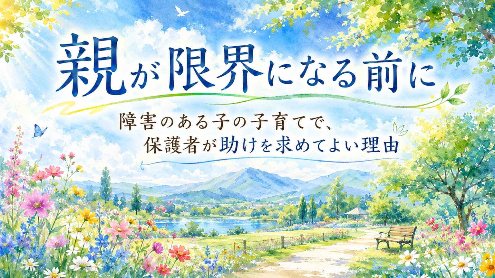

子どもの困りごとを家族の中で説明しようとしたとき、祖父母や親族から「甘やかしているだけ」「昔ならそんなことは許されなかった」と言われて、深く傷つく保護者は少なくありません。
その言葉を聞いているのは、保護者だけではありません。子ども本人がそばにいることもあります。自分の困りごとを「わがまま」「親のしつけの問題」と言われる経験は、子どもの中に残ります。
この記事では、親族を責めるためではなく、子どもと保護者を守るために、特性をどう伝えるかを整理します。
ご注意：この記事は診断や治療、法律判断の代わりになるものではありません。家庭内で見えている困りごとを、子どもを責めない言葉で整理し、必要に応じて学校や相談機関と話し合うための材料としてお読みください。
1. 伝える目的を小さく決める
祖父母や親族に子どもの特性を伝えるとき、最初から「全部わかってもらおう」とすると、保護者の負担が大きくなります。発達特性、感覚の過敏さ、不安の強さ、切り替えの難しさは、外から見えにくいことがあります。そのため、説明してもすぐに納得してもらえないこともあります。
まず目標を小さくしましょう。最初の目標は、親族全員に専門的理解を持ってもらうことではありません。
- 子どもの前で傷つく言葉を言わないでもらうこと
- 困った場面で保護者の対応を邪魔しないでもらうこと
- 最低限の関わり方を共有すること
「理解してくれない人を理解させる」ことに力を使いすぎると、保護者が疲弊します。家庭内での説明は、説得ではなく、子どもを守るための環境調整と考えてよいのです。
2. 診断名より先に、具体的な困りごとを伝える
診断名は、必要な支援を整理するための大切な言葉です。ただし、祖父母や親族に伝える場面では、診断名だけを先に出すと、「レッテルを貼っている」「気にしすぎ」と受け取られることがあります。
そのため、最初は診断名よりも、日常の具体的な場面から伝えるほうが伝わりやすいことがあります。たとえば、次のような言い方です。
- 急に予定が変わると、不安が強くなって動けなくなることがあります。
- 大きな声で注意されると、反省するより先に固まってしまいます。
- においや食感が強いものは、好き嫌いではなく、体が受けつけにくいことがあります。
- 一度楽しいことに集中すると、すぐに切り替えるのが難しいです。
ここで大切なのは、「だから何もしないでください」と伝えることではありません。この子には、届きやすい伝え方がありますと伝えることです。
3. 祖父母・親族に伝える三点セット
親族に説明するときは、長い説明よりも、次の三点に絞ると伝わりやすくなります。
一つ目：何が苦手か
「急な変更が苦手」「大きな音が苦手」「順番を待つのが苦手」など、できるだけ具体的に伝えます。「発達障害だから」だけでは、相手は何をすればよいかわかりません。
二つ目：なぜ困るのか
「わざと困らせているのではなく、頭や体の切り替えに時間がかかる」「叱られると理解する前にパニックになる」など、行動の背景を短く伝えます。
三つ目：どう関わってほしいか
「先に予定を伝えてほしい」「大きな声で叱らず、短い言葉で言ってほしい」「食事の量は親に任せてほしい」など、具体的なお願いにします。
説明は、専門用語を増やすよりも、行動の見え方を変えることが大切です。「わがままに見える行動」の奥に、感覚のつらさ、不安、見通しの持ちにくさ、疲労が隠れていることがあります。
4. その場で使える返し方
親族から強い言葉を向けられたとき、その場で長く説明しようとすると、保護者の心が削られます。あらかじめ短い返し方を決めておくと、子どもの前での衝突を減らしやすくなります。
| 言われがちな言葉 | 返し方の例 |
|---|---|
| 「しつけが悪いんじゃないの」 | 「しつけをしていないのではなく、この子に伝わる方法を探しています。大きな声で叱ると、かえって動けなくなります」 |
| 「甘やかしすぎ」 | 「甘やかしているのではなく、今は崩れないための手順を使っています。落ち着いてから必要なことを伝えます」 |
| 「昔はそんな子いなかった」 | 「昔も困っていた子はいたと思います。ただ、今はその子に合う支援を考えるようになっています」 |
| 「少しくらい我慢させないと」 | 「我慢の練習は必要ですが、限界を超えると練習になりません。少しずつ慣れる形にしたいです」 |
| 「親が気にしすぎ」 | 「気にしすぎかどうかではなく、本人が実際に困っています。まずは困りに合う対応を試したいです」 |
返し方の目的は、相手を論破することではありません。子どもの前で「自分は悪い子だ」と感じさせる言葉を止めることです。
5. 本人の前で守りたい線引き
親族との話し合いで、どうしても守りたい線があります。それは、子どもの前で人格を否定する言葉を言わせないことです。
「わがまま」「おかしい」「親の育て方が悪い」「将来困るぞ」といった言葉は、大人が思う以上に子どもの中に残ります。特に、すでに学校や集団生活で失敗経験が多い子は、家庭の中でまで否定されると、安心できる場所を失ってしまいます。
もし本人の前で強い言葉が出たら、その場で議論を続けるより、短く区切ってよいです。
「その言い方は本人の前ではしないでください。必要な話は、あとで大人だけでします」
子どもが聞いてしまったときは、あとで短く言い直します。
「あなたが悪いという話ではないよ。大人同士で、どうしたら過ごしやすいかを話しているよ」
親族への配慮と、子どもの尊厳を守ることは同じではありません。どちらを優先する場面かを、保護者が決めてよいのです。
6. 親族に渡せる短いメモ
口頭で説明すると感情的になりやすい場合は、短いメモにして渡す方法もあります。長い資料より、親族が実際に関われる内容に絞ることが大切です。
このメモは、診断名を伝えるためのものではありません。子どもと親族が一緒に過ごす時間を、少し安全にするためのものです。
7. 伝えても変わらないとき
何度説明しても、受け止め方が変わらない親族もいます。その場合、保護者の説明が足りないとは限りません。世代によって、子育て観、障害観、学校観は大きく違います。
どうしても本人の前で傷つく言葉が続く場合は、会う時間を短くする、食事の場を避ける、親族の中でも理解のある人を窓口にするなど、接触の形を調整してかまいません。
家族だから必ず理解し合える、とは限りません。しかし、理解が十分でない相手との距離を調整することも、子どもを守る支援の一部です。
まとめ：「しつけが悪い」と言われる前に、守る線を決めておく
子どもの特性を祖父母や親族に伝えるとき、最も大切なのは、保護者が一人で説明責任を背負いすぎないことです。
伝える内容は、診断名よりも、まずは具体的な困りごとと関わり方に絞ります。「何が苦手か」「なぜ困るのか」「どう関わってほしいか」を短く伝えるだけでも、家庭内の摩擦は少し下げられます。
そして、本人の前で「わがまま」「甘やかし」「しつけが悪い」と言わせない線引きは、保護者が持ってよいものです。
親族に完璧な理解を求める必要はありません。まずは、子どもが安心してその場にいられること。そのための言葉と距離の取り方を、家庭ごとに選んでいきましょう。
親族への説明や学校への相談前に整理したい方へ
まなびの森教育研究所では、診断や治療ではなく、家庭で見えている困りごとや、学校・親族へ伝える言葉の整理をお手伝いしています。
「どう説明すればよいかわからない」「親族の言葉で傷ついている」「本人の前で守る線を整理したい」と感じるときは、相談前のメモづくりから一緒に整えられます。
保護者向け相談ページを見る